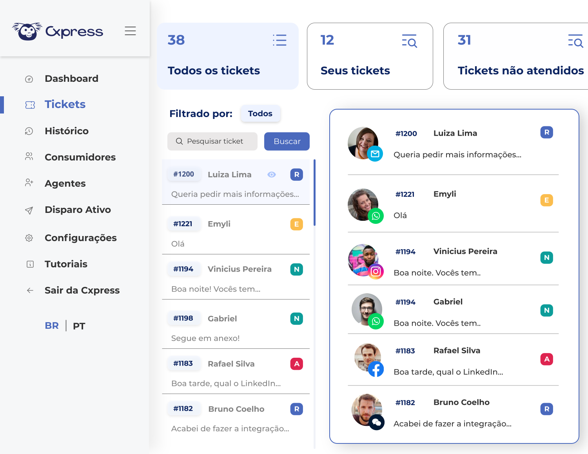
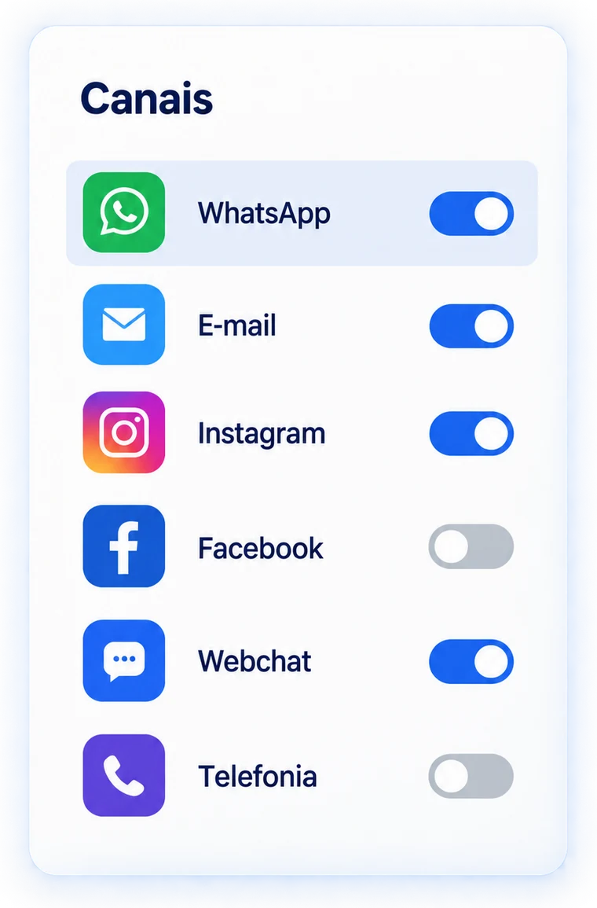
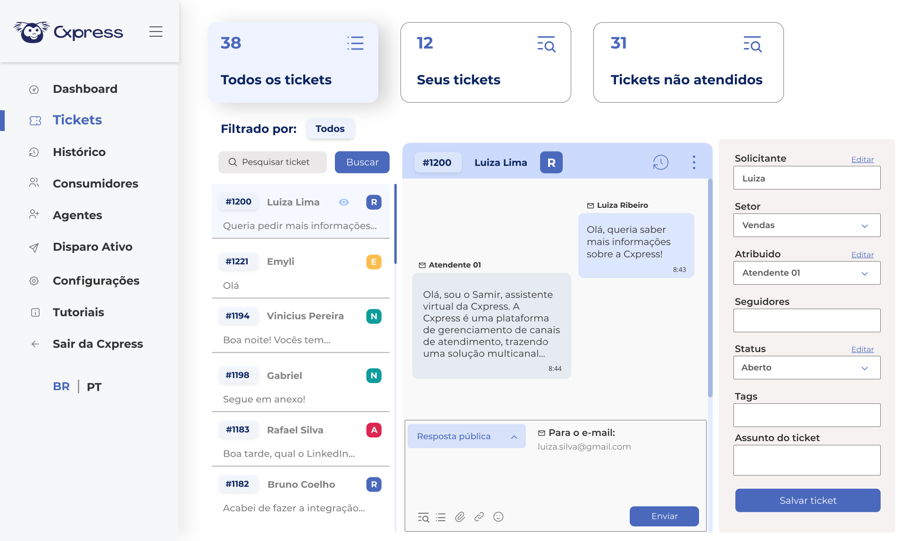

Atenda com múltiplos agentes utilizando um único número.
Sistema de Atendimento ao Cliente para Centralizar, Automatizar e Gerenciar sua Operação
Centralize WhatsApp, redes sociais, e-mail e telefone em um único sistema. Organize sua equipe, automatize atendimentos com Inteligência Artificial e acompanhe cada interação do início à resolução.
- API oficial do WhatsApp
- IA + atendimento humano
- Dashboards em tempo real


Mais de 800 clientes confiam em nós


Todos os canais

Um Sistema de Atendimento para Todos os seus Canais
Com a Cxpress, sua empresa reúne os principais canais de comunicação em uma única operação. Sua equipe deixa de alternar entre diferentes ferramentas e passa a acompanhar conversas, clientes e solicitações em um único lugar.
Instagram e Facebook
Centralize mensagens e interações sociais.
Transforme solicitações recebidas em atendimentos organizados.
Telefone
Integre a operação de voz aos demais canais.

Software de atendimento
Software de Atendimento ao Cliente para Organizar toda a Operação
Organize filas, distribua atendimentos entre agentes e setores e acompanhe cada solicitação até sua resolução.
Em vez de gerenciar conversas isoladas em diferentes canais, sua equipe passa a trabalhar em uma operação centralizada.
Fila única de atendimento
Visualize as solicitações recebidas em diferentes canais em um único ambiente.
Distribuição automática
Encaminhe atendimentos automaticamente para equipes e agentes.
Tickets
Organize cada solicitação e acompanhe seu status.
Histórico do cliente
Mantenha as interações anteriores acessíveis para sua equipe.
Tags e classificações
Organize e categorize os atendimentos.
Respostas salvas
Agilize respostas para situações recorrentes.
Plataforma de atendimento
Plataforma de Atendimento ao Cliente com Visão Única de Cada Conversa
Mesmo quando um cliente conversa com sua empresa por diferentes canais, sua equipe pode acompanhar o contexto da interação e manter as informações centralizadas.
Agende uma demonstração gratuita
IA + humano
Sistema de Atendimento com Inteligência Artificial e Atendimento Humano
Use Inteligência Artificial para responder às primeiras interações, solucionar dúvidas frequentes e manter o atendimento disponível mesmo quando sua equipe não estiver online.
Quando necessário, a conversa pode continuar com um atendente humano mantendo o contexto do atendimento.
- Atendimento 24/7
- Respostas em linguagem natural
- Automação das primeiras interações
- Transferência para atendimento humano
Produtividade
Software para Atendimento ao Cliente que Simplifica o Trabalho da Equipe
Quanto mais canais uma empresa utiliza, mais difícil se torna acompanhar conversas usando diferentes aplicativos. A Cxpress centraliza a operação para reduzir tarefas manuais e ajudar os agentes a encontrar rapidamente as informações necessárias para resolver cada atendimento.
Antes
Cada canal numa ferramenta diferente
Depois

Uma única plataforma de atendimento
CanaisClientesTicketsIAGestão
Filas e distribuição
Sistema de Atendimento ao Cliente com Filas e Distribuição Automática
Configure filas para diferentes áreas da empresa e encaminhe cada atendimento para a equipe mais adequada.
01Filas por setor
Comercial, suporte, financeiro ou qualquer outra área.
02Distribuição automática
Direcione novos atendimentos seguindo as regras da operação.
03Transferência entre agentes
Encaminhe uma conversa quando outro profissional precisar assumir.
04Priorização
Organize atendimentos conforme as necessidades da equipe.
Gestão em tempo real
Plataforma de Atendimento com Dashboards e Indicadores em Tempo Real
Acompanhe o desempenho da operação e identifique rapidamente gargalos no atendimento.
SLA
Tempo para atender e resolver solicitações.
TMA
Tempo médio de atendimento.
TME
Tempo médio de espera.
Volume de atendimentos
Acompanhe por canal, período ou agente.
Produtividade
Visualize a performance das equipes.


Para empresas
Sistema de Atendimento para Empresas que Precisam Atender Mais e Melhor
Quando o volume de mensagens cresce, processos manuais passam a limitar a capacidade da equipe. Com um sistema de atendimento centralizado, sua empresa pode estruturar filas, automatizar interações e acompanhar os resultados sem perder o controle da operação.
01
Centralize
Todos os canais em uma plataforma.
02
Automatize
Use IA e regras automáticas para reduzir atividades manuais.
03
Gerencie
Acompanhe equipes, filas e indicadores em tempo real.
Diferenciais
Por que Usar a Cxpress como seu Sistema de Atendimento ao Cliente?
Todos os canais em uma única plataforma
WhatsApp, Instagram, Facebook, e-mail e telefone.
Inteligência Artificial
Automatize conversas em linguagem natural.
IA + atendimento humano
Permita que a automação e sua equipe trabalhem juntas.
Múltiplos atendentes no WhatsApp
Organize diferentes agentes utilizando um mesmo número.
Histórico centralizado
Mantenha todo o contexto do relacionamento.
Dashboards em tempo real
Acompanhe a operação e os principais indicadores.
Dúvidas sobre Sistemas e Softwares de Atendimento ao Cliente
O que é um sistema de atendimento ao cliente?
É a ferramenta que reúne num só lugar as conversas que chegam por WhatsApp, redes sociais, e-mail e telefone. Cada contato vira um atendimento registrado, com responsável, status e histórico, e o gestor acompanha a operação inteira sem depender de planilhas.
Como funciona um software de atendimento ao cliente?
As mensagens de todos os canais entram numa fila única. Regras de distribuição encaminham cada conversa para a equipe ou o agente certo, a IA pode responder o primeiro contato e cada interação fica salva no histórico do cliente. Indicadores como SLA, TMA, TME e volume aparecem em dashboards em tempo real.
Qual a diferença entre sistema e plataforma de atendimento?
No dia a dia os dois termos são usados como sinônimos. Plataforma costuma indicar uma solução que reúne vários recursos no mesmo ambiente: canais, tickets, automação com IA e relatórios. A Cxpress funciona assim, com tudo no mesmo painel e sem ferramentas separadas para integrar.
Como escolher um sistema para atendimento ao cliente?
Comece pelos canais que seus clientes usam e confira se o WhatsApp é integrado pela API oficial. Depois avalie a distribuição de filas, o histórico unificado, a automação com IA com passagem para o atendente, os dashboards e o suporte na implementação. Uma demonstração com os fluxos da sua própria operação ajuda a comparar.
Um sistema de atendimento pode integrar WhatsApp e redes sociais?
Sim. Na Cxpress, WhatsApp (API oficial), Instagram, Facebook, e-mail, telefone e chat do site são integrados nativamente e chegam na mesma fila de atendimento.
É possível usar Inteligência Artificial no atendimento ao cliente?
Sim. A IA da Cxpress, integrada ao ChatGPT, responde o primeiro nível de atendimento em linguagem natural, 24 horas por dia. Quando a dúvida é mais complexa ou o cliente pede, a conversa passa para um atendente humano com todo o contexto.
Um software de atendimento permite múltiplos atendentes no WhatsApp?
Sim. Vários agentes atendem pelo mesmo número de WhatsApp, cada um com as próprias conversas, e as filas distribuem o volume entre eles. Também é possível conectar mais de um número à Cxpress.
Como centralizar diferentes canais de atendimento em uma única plataforma?
Os canais são conectados à Cxpress na configuração inicial, com apoio do time de implementação. A partir daí todas as mensagens chegam numa fila única e o histórico de cada cliente fica reunido, qualquer que seja o canal usado.
Centralize seu Atendimento em um Único Sistema
Organize canais, equipes e clientes, automatize interações com Inteligência Artificial e acompanhe toda a operação em uma única plataforma. Agende uma demonstração gratuita.